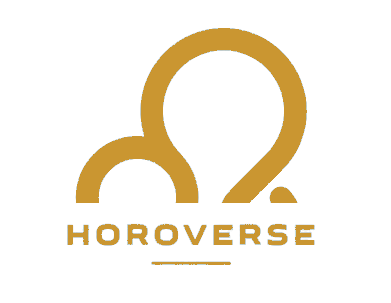

<ion-content [fullscreen]="true">
  <div class="flex">
    <div class="w-24 ml-2 mt-2">
      
    </div>
  </div>

  <div class="fixed inset-0 flex items-center justify-center mb-96 text-white" *ngIf="showModal">
    <div class="bg-[#1a2d7d] bg-opacity-50 border border-[#ca9631] rounded">
      <div class="bg-[#1a2d7d] p-4 rounded">
        <p>Veuillez remplir vos informations</p>
      </div>
    </div>
  </div>

  <h2 class="text-2xl text-white font-bold text-center">{{welcomeMessage}}</h2>

  <div class="mt-10 text-white flex flex-col justify-center items-center">
    <input type="text" placeholder={{firstname}} value={{pseudo}} [(ngModel)]="pseudo"
      class="border border-[#ca9631] focus:outline-none rounded-lg bg-transparent h-10 w-80 text-center font-bold"><br>

    <ion-input id="date-input" type="text" (ngModelChange)="getAstrologicalSign()"
      class="border border-[#ca9631] rounded-lg focus:outline-none mb-4 bg-transparent h-10 w-80 text-center font-bold"
      placeholder="Date"
      [(ngModel)]="selectedDate" (click)="openDatePicker()">
    </ion-input>


    <p *ngIf="astrologicalSign" id="sign-output" class="font-bold text-2xl mb-4 text-[#ca9631]">{{ symbolSign }}</p>
    <button class="bg-[#ca9631] hover:bg-[#ca8631] text-white rounded-lg ml- px-4 py-2 mt-6"
      (click)="createNewUser()">Voir mon horoscope</button>
  </div>


</ion-content>
